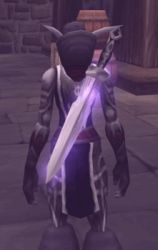

Guildes
Arche du Dragon Noir (l')
Mystiruis
Age : 31 ansSexe : Femme
Race : Humain
Faction : Alliance
Formation : Prêtre
Description : Saraniah , la maman de Mystiruis est venue sinstaller avec sa jeune fille, après avoir fuit les terres de Lordaeron, dans une petite ferme de la forêt dElwynn.
Elles survécurent tant bien que mal durant quelques temps , vivant des produits de la terre.
Pourtant , elle savait que le destin de sa fille nétait pas celui de la ferme. Contrairement à elle , Myst était grande , élancée , fine et fière. Son caractère trempé ne ressemblait en rien au sien . Ses gestes étaient graciles et son port de tête élancé.
Tout laissait penser qu elle était de noble lignée.
Un matin , elle conduisit sa fille dans la cathédrale de Stormwind et la confiât à la Grande Prêtresse Laurenna.
Il était temps pour Myst de trouver sa voie. Ainsi commença le long et difficile apprentissage de la loi des Prêtres de Lumière.
Solitaire , ne revenant que pour parfaire ses connaissances, elle parcouru les mondes du Nord au Sud , dEst en Ouest , combattant, apportant ses soins , sauvant des vies partout la où cela nécessaire.
Devenu femme, Saraniah jugea quil était temps de dévoiler le secret de sa naissance à son enfant. Le Secret des Doriàans.
Plus d'infos sur Mystiruis >>>
Lire les 9 récits de Mystiruis >>>
Nean
Age : 654Sexe : Femme
Race : Elfe
Faction : Alliance
Formation : Voleur
Description :
Souvenirs....
-Berceau de l'Hiver, des annèes...oui beaucoup d'annèes auparavant-
Au delà des montagnes enneigées, était batie une petite maisonnée, presque enfouie sous la neige écarlate de la région. Cette petite bâtisse paraissaitt bien froide à première vue mais pourtant, l'intérieur y était si douillet.
A l'entrée une jeune elfe, d'une vingtaine d'années tout au plus, sautillait d'impatience à l'idée de sortir. Elle était petite, ce n'était qu'une enfant après tout. Elle avait deja de grands cheveux blancs attachés par un noeud qu'elle n'aurait cédé pour rien au monde.
D'un pas décidé, elle prit furtivement un arc qui était entreposé sur l'établi, là où étaient rangées toutes les armes de cette maison. Elle n'oublia pas de prendre quelques flêches qu'elle rangea dans un carquois aussi vite qu'elle pu.
L'elfe hocha la tête à gauche puis à droite, le chemin était libre. Elle pouvait sortir incognito.
Elle tourna les talons puis ouvrit la porte d'un geste brusque et commenca à courir de toute ses forces aussi loin que son souffle pouvait l'y emmener.
Son arc balancait, et la génait pour courir : il était dix fois trop grand pour elle ! Mais ce n'est pas ce détail qui aurait pu l'arrêter.
Elle finit de courir pour marcher enfin, laissant derrière elle des traces de pas dans la neige aussi discrètes qu'un Diablosaure dans une botte de foin.
Elle arriva enfin à destination. Elle voulait chasser le Yéti. Mais il y'a des bons et des mauvais chasseurs. Vu comment elle tenait son arc elle ne devait pas être très douée.
Elle se camoufla dans les ombres, chose qui était inée chez elle. Elle attendait vaillament qu'un Yéti vienne et sorte de la grotte qui se présentait devant elle. Elle patientait, mais toujours rien. Elle soupira et fit une grimace pour trouver un moyen de faire sortir au moins un yéti.
Elle finit par trouver un stratagème stupide, certes, mais qui pour elle paraissait la solution la plus ingénieuse de sa vie (un vrai vrai stratagème gnomesque :p).
Elle détacha son ruban de ses cheveux, une fois deroulé il paraissait bien plus grand que ce que l'on pouvait penser à première vue. La jeune elfe y attacha une de ses flèches. Voici le plus parfait des appâts se disait-elle.
Elle lanca le ruban fleché avec son arc, et la flèche vint s'écraser lamentablement sur une paroie de la grotte, faisant tinter un bruit aigüe suivi d'un echo.
Elle était fière du résultat, au moins elle allait reveiller un yéti. Seulement elle entendit des pas, beaucoup de pas, oh oui beaucoup trop!
Elle se retourna et elle vit des yétis surgir d'un peu partout. Malaise. Comment chasser autant de yétis à la fois ? A ce moment là la fuite aurait été l'une des meilleures solutions, mais elle prit une flèche aussi vite qu'elle put pour essayer de viser le premier Yéti qui se présentait à elle, -au moins essayer d'en avoir un avant de fuir-.
La jeune elfe n'eut le temps de rien que les yétis étaient déjà à terre, une flèche chacun en plein coeur. Elle tourna la tête, ce n'était pas elle qui avait lancé autant de flèches en même temps, elle n'avait pas rêver.
Cachée dans un buisson de houx elle vit une ombre, elle plissa les yeux pour essayer de la discerner.
"L'ombre du houx" sortit d'un pas assuré arc à la main en direction de la jeune elfe. L'ombre n'était en fait que sa soeur, qu'elle reconnu à sa démarche quand elle est fachée.
La plus petite des soeurs essaya de fuir pour ne pas se faire gronder, mais...sans succès. "L'ombre du houx" l'attrapa par le col et la fit s'arreter net.
"- Lâche moi Lei ! Lâche moi!"
"- Tu faisais quoi ici toute seule ? Hein ?"
"- Je chassais le Yéti, ca se voit pas ?!" Répondit sa soeur tout en se débattant.
Les soeurs Snowhisper se disputaient encore. Deux caractères différents mais pas tant que ca *rire* .
"- Le Yéti ?" Répondit Leiliel d'un ton scinique.
"-Les bêtes blanches à fourrures oui!"
"-Si tu ne veux pas que je le dise à Père tu ferai mieux de me donner cet arc très vite!"
"-Nan! Pas question, je peux le faire moi aussi! Pourquoi il n'y a que toi qui ait le droit ?!" Répondit la plus petite.
-" Tu es encore trop jeune Ne' , ne fais pas ta tête brûlée ! Regarde cet arc il est bien trop grand pour toi!"
"- Je m'en fiche ! Je veux faire comme toi!"
"- Je t'apprendrais si tu veux, mais si tu n'es pas sage et obéissante il t'arriveras quelquechose avant que je t'apprenne quoi que ce soit." Leiliel était déjà plus calme à ses paroles.
Leiliel lui arracha l'arc des mains et la ramena à la maisonnée. Sur la route aucune des deux soeurs ne dirent mot. Une boudait, l'autre surveillait.
Arrivée en lieux surs, la plus petite des soeurs alla sur le toit de la maison tanids que l'autre allait ranger les armes.
Elle était fachée, elle voulait faire comme sa soeur, mais on l'en empechait, sa soeur veillant toujours sur elle.
Assise sur une poutre contemplant la neige tomber à petit flocon, elle remarqua que dans la précipitation elle avait oublier son ruban. Ruban que sa mère lui avait donné. Elle était fachée contre sa soeur et laissait transparaitre un mauvais caractère qui chez elle était omniprésent malgré son jeune âge.
"- Pas la peine de me surveiller comme ca Lei" Dit-elle tout en se retournant vers sa soeur.
"-Encore en train de faire du ta mauvaise tête ici ?" Leiliel se mit à rire.
"- Pfff quand je serai plus grande je couperai ton arc en deux avec ma lame!"
"- Ta lame ? Où as tu eu ca ??!"
Leiliel se rapprocha voulant voir l'arme de la jeune elfe. Puis elle se mit à rire sans s'arrêter. Leiliel vit que sa soeur n'avait qu'un baton de bois dans les mains. La jeune elfe voulait sans doute faire comme si cétait une vraie lame, mais sans succès, la situation était vraiment grotesque.
"- Pourquoi rigoles-tu ?! Un jour tu verras!"
Les deux elfes s'arrèterent subitement de parler à l'entente d'une voix qui leur était familière :
"-Leiliel, je suis rentré, vient me voir j'ai besoin de toi!". Le père des Snowhisper était charismatique mais pas sévère.
"-Oui père j'arrive !" Répondit Leiliel d'un ton enjoué.
"-Et pas la peine de bouder soeurette, pose ce baton et va jouer dans la neige !"
La plus jeune soupira jeta le baton aussi loin qu'elle pu et entoura ses jambes avec ses bras, se mettant presque en boule pour finalement groner après chaque flocon de neige qui pouvait passer devant elle. Elle aurait pu grogner et injurier pendant des heures, mais finit par se calmer et s'endormir.
Sa soeur vint alors la porter dans son lit quelques heures plus tard en souriant de voir sa soeur qui n'avait pas bougé du toit.
La maisonnée des Snowhisper était souvent agitée mais cétait clair les deux elfes s'adoraient malgré tout.
Plus d'infos sur Nean >>>
Shanara
Age : 122Sexe : Femme
Race : Elfe
Faction : Alliance
Formation : Druide
Description : Fille d'une prêtresse d'Elune et d'un des plus respectés druides de Cenarius, Shanara avait toujours baigné dans l'amour de la vie et de la nature, et s'était naturellement tournée vers cette voie en grandissant.
C'est également vers cet amour de la nature qu'elle avait tenté de guider son ami d'enfance Nightshade.
Mais, il voyait l'espionnage et surtout l'assassinat comme une vocation, une partie de lui-même, et seul l'attachement extrême qu'elle lui portait la gardait encore auprés de lui.
Le fait qu'il oeuvrait pour le bien de l'Alliance n'arrivait pas à la consoler tout à fait, mais elle restait à ses côtés.
C'était sa décision, et même si cela s'avérait parfois difficile pour ses convictions, elle resterait toujours à ses côtés, car elle savait être le seul élément stable de sa vie aventureuse.
Plus d'infos sur Shanara >>>
Taichin
 Age : 6300
Age : 6300
Sexe : Homme
Race : Elfe
Faction : Alliance
Formation : Chasseur
Description : Mon nom est Taichin et je suis l'un des premiers Haut-elfes né en Quel'Thalas où j'y ai vécu une enfance paisible.
Je suis chasseur mais ça n'a pas toujours été le cas. En effet, mon père m'a d'abord enseigné l'art des arcanes durant mes premiers siècles...
J'ai ensuite passé 300 ans reclu dans la forêt pour apprendre à maitriser mes pouvoirs et les utiliser avec sagesse.
Après tant d'années de solitude, je décidais alors d'aider mes frères à combattre nos ennemis de l'époque : les Trolls.
C'est d'ailleur sur champs de bataille que j'ai rencontré Zaldiar. Nous avons combattu cote à cote durant plus de 3 000 ans. Il est d'ailleur le seul à m'avoir convaicu d'enseigner mes connaissances en arcanes aux mortels. Une décision regrettable car elle a permis certe d'éliminer ces minables Trolls des terres du Nord mais a aussi attiré des ennemis plus mortels : la légion démoniaque.
Je rejoinds néamoins l'ordre de tirisfal durant quelques années afin d'aider ces mécréants humains à se débarrasser de ce fléau. Cependant, je décide cette fois de ne plus utiliser la magie et de me spécialiser dans le maniement de l'épée à une main.
Déçu par tous leurs conflits internes, je décide de quitter l'ordre afin de rejoindre mes frères sur le mont sacré Hyjal. J'y rencontre ma compagne Rikkyu avec qui j'ai appris le noble art des chasseurs.
Nous y vivions un vie paisible jusqu'à ce je rencontre de nouveau mon ancien ami et frère d'arme Zaldiar il y a quelques mois. Il me présente alors sa compagne Léïa et me donne des nouvelles du monde que j'avais laissé durant toutes ces années.
C'est alors que l'on décide de retourner en Azeroth pour venir en aide aux mortels et de créer notre Cercle des Anciens. C'est alors que je décide de prendre en main cette confrérie et d'y inviter 2 êtres inférieurs : un humain Angelface qui a hautement remonté mon estime pour cette race inférieure et un nain Darkguizmo qui m'amuse quelque peu.
Depuis, nous parcourons Azeroth afin de réunir du monde pour éliminer la Horde de nos terres.
Plus d'infos sur Taichin >>>
Lire les 4 récits de Taichin >>>
Uter
Age : Inconnu.Sexe : Homme
Race : Humain
Faction : Alliance
Formation : Paladin
Description : Je suis issu d'une famille simple. Enfin simple... Une jardinière, et un Paladin. Mon âge? Inconnu, je n'en ai pas le souvenir, et rien n'a été écrit à mon sujet. Mon nom de naissance? Quentin Silverdream. Mais l'on m'a renommé Uter. Un nom de Paladin. A travers les années de ma vie, j'ai vécu pour la justice. A travers les années de ma vie, j'ai été le bras du gouvernement, le bras d'ordres puissants. Je n'étais qu'un outil. On me disait : Bras de la justice... Balivernes. Naïf et jeune, je suis tombé dans le piège de certains ecclésiastiques influents qui avaient besoin de ma force. N'écoutant que les souvenirs récurents des dernières paroles de ma mère, je me suis lancé, sous leurs ordres. Ce temps est révolu, mais il est marqué en moi au fer rouge. J'ai vu pasmal de choses. Mais quelles sont elle par rapport à l'immensité historique du monde, ces choses? La Sainte Inquisition... Le gouvernement... Tous pour une lutte de pouvoir. Tellement accablé par tant de corruption j'ai même remis mes marques de Paladins pendant un temps. Mais le souvenir de mes anciens maîtres persistait. Les vertus même du Paladin m'ont poussées à reprendre les armes et à me battre jusqu'à ce que justice soit faite. J'ai tenté à partir de ce moment d'appliquer cela. Mais encore l'ultime remise en question survient : Qui suis-je pour juger?
Alors pas de jugements. Pas de massacres. Faire couler le sang est mal. Quel que soit la raison. Il y à toujours une autre alternative, en tout cas, pour les affaires officielles. Dorénavant, je me suis consacré à la protection de la vie.
Plus d'infos sur Uter >>>
Lire les 5 récits de Uter >>>